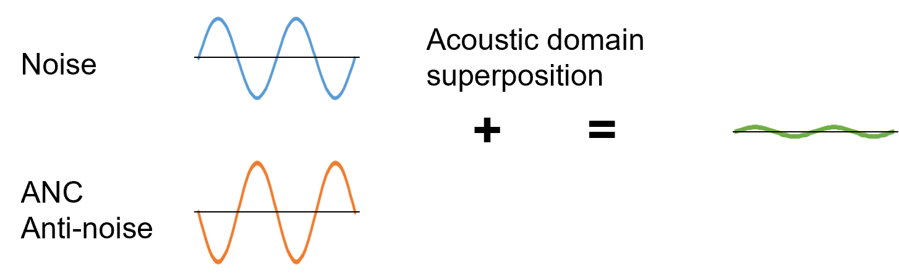
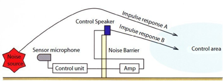
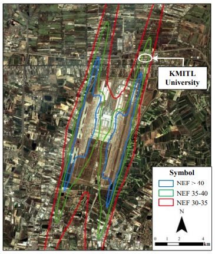
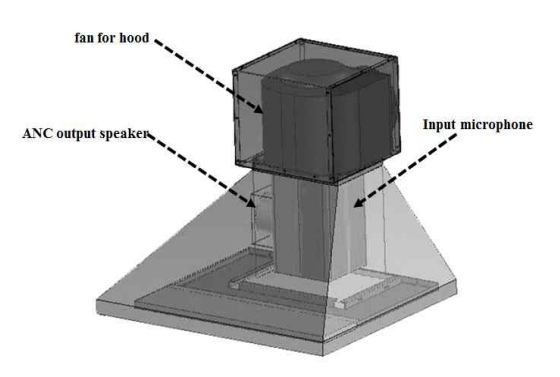
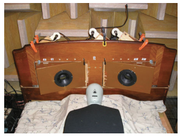
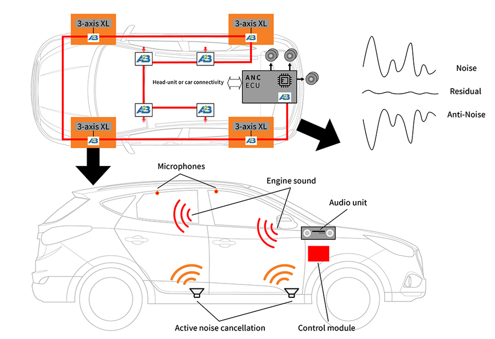

|
|
We develop Brand new Technologies reducing Noise pollutions. | English | 한글 |
Noise Pollutions
Humans suffer from many kinds of noise pollutions.
We can reduce noise pollutions by using Active Noise Control(ANC) technology.
|
|
|
|
||||||||
|
|
|
|
Human Effects of Noise Pollution
Active Noise Control(ANC)
Principle of ANC: Generate inverse-phased anti-noise signal and superpose at acoustic domain resulting attenuation of noise level.

"Fight Noise with Noise!"
ANC Performance Test
We can not stop the generation of noise pollutions.
But, We can reduce noise level as below video (model KAN23 test video, Teczang co.).
KAN23 ANC Performance Test screen shot(Red line= no ANC, Yellow line= with ANC)
|
|
||||
|
|
KAN23 High Performance ANC


| Parameter | Data |
|---|---|
| Size | 145(W) x 54(H) x 250(L) mm |
| Weight | 1.1 kg |
| Supply power | 12 VDC |
| DSP MCU | STM32H723 32-bit Arm® Cortex®-M7, 550MHz, L1 Cache, 1177 DMIPS(Dhrystone 2.1) |
| ANC Algorithm | Fast FxLMS with VSS |
| MIMO | 2 channel, 2 Reference microphone x 2 Laud speaker x 2 Error microphone |
| Low Pass Filter | Bessel 4th order, Sallen-key, Passband frequency 2500Hz |
| Components | 1 main module, 4 microphones, 2 Laud speakers, 1 DC power adaptor(12 VDC) |
ANC Application Examples
(Active Noise Barrier: Road, Construction place, about 10dB attenuation)
[https://fpsinc.co.jp/en/anc/]



(Airport nearby School: about 15dB attenuation)
[International Journal of Electrical and Electronic Engineering & Telecommunications Vol. 8, No. 6, November 2019]



(Traction Transformer)
[Circuits Syst Signal Process (2017) 36:1586–1603]

(Kitchenhood: about 5.6dB attenuation)
[Journal of The Korea Society of Computer and Information Vol. 21 No. 3, pp. 91-96, March 2016
]
(Snore noise bed: about 5~10dB attenuation)
[https://doi.org/10.1017/ATSIP.2012.4 1 Published online by Cambridge University Press

(Active Headrest of Noisy Vehicle: about 10dB attenuation)
[Appl. Sci. 2021, 11, 5033]

(Car/Truck)
[https://news.skhynix.com/anc-technology-your-everyday-life-evolution]

(Aircraft/Train Cabin)
[Blekinge Institute of Technology, Sweden]

About Us
For the better life environments!